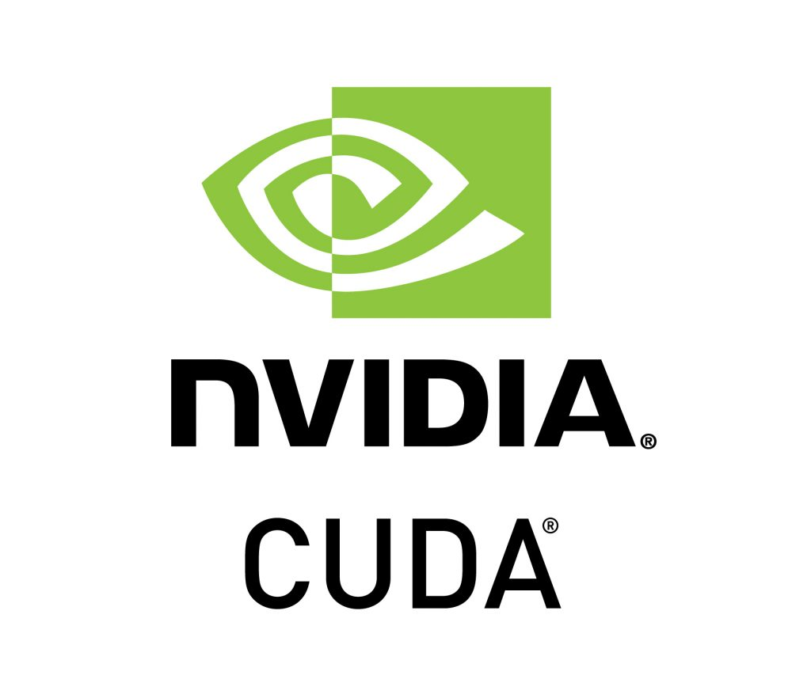
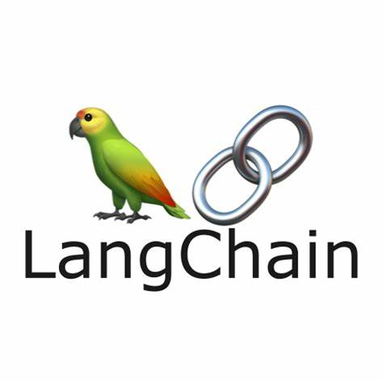

Education
Udacity
Febuary 2024 - April 2024Nanodegree, Generative AI, View Certificate
Graduated in April 2024 from the Udacity Generative AI Nanodegree Program.
- Acquired job-ready skills, spanning from text generation with Large Language Models to foundational theories.
- Worked through generative AI complexities such as computer vision (GPU), and crafting advanced AI chatbots.
- Utilized deep learning frameworks like PyTorch, and various techniques including Transfer Learning and Parameter Efficient Fine-Tuning to develop and deploy advanced neural network models for tasks such as image classification, text generation, and natural language processing.
University of Illinois at Chicago
August 2015 - December 2019Bachelor of Science in Mathematics
Graduated in December 2019 from the University of Chicago Illinios with a Mathematics B.S and an Economics Minor.
- Leadership role in a Unity project focused on 3D space visualization in mathematics.
- Active participation in both Mathematics Club and Computer Science Club.
- Served as an Eco-Educator in the Sustainability Club.
Projects

Implementing Lightweight Fine-Tuning on a Foundation Model
- Implemented sentiment analysis using distillbert-base-uncased model and Hugging-Face transformers library on Rotten Tomatoes dataset.
- Pre-processed data with distilbert-base-uncased tokenizer, enhancing evaluation metrics like loss and accuracy post-fine-tuning.
- Achieved PEFT (Parameter-Efficient Fine-Tuned) model surpassing Base Model, with reduced loss, improved accuracy, and faster evaluation runtimes.

OpenAI Custom Chatbot
- Developed a custom chatbot project using OpenAI API, and Wikipedia, that allows for a fully dynamic conversation with extensive coverage of any subject, providing rich content for chatbot responses.
- Leveraged Python’s BeautifulSoup to scrape Wikipedia, extracting data relevant to the user's search topic, transforming data into a versatile dataframe that accommodates a diverse range of prompts and questions.
- Engineered Python functions to create embeddings for text data using the embedding model text-embedding-3-small, followed by building prompts using the completion model gpt-3.5-turbo.

AI-Driven Background Substitution Web Application
- A web application was developed for image background substitution using Stable Diffusion through a text prompt.
- Python libraries like diffusers, gradio, accelerate, torch, and transformers facilitated the implementation.
- Regular updates and presentations showcased project progress, emphasizing achievements and future steps.

Personalized Real Estate Agent: AI powered Real Estate Assistant
- Developed using machine learning techniques, this application assists users in finding suitable properties based on their preferences.
- Python served as the primary programming language.
- Libraries like langchain, OpenAI, and chromadb were used for tasks such as generating real estate listings data, saving it to a CSV file, and reading it into a DataFrame.
Skills
- Python
- PyTorch
- Deep Learning
- Machine Learning Algorithms
- Neural Networks
- NLP
- Generative AI
- Data Visualization
- SQL
- APIs
- Git & Version Ctrl
- Docker
- Distributed Computing
- AWS
- Postman
- Jira
- Salesforce Einstein
- Probability Theory
- LLM
- Stata
- SAS
- R
- SFTP
- HuggingFace Library
- Open AI
- Leadership
- Communication
- Teamwork
- Problem-solving
- Decision-making
- Adaptability
- Conflict Resolution
- Spanish